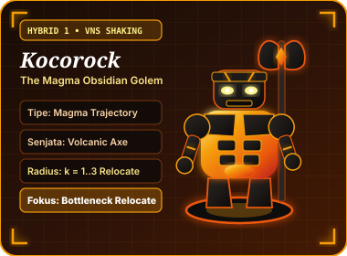
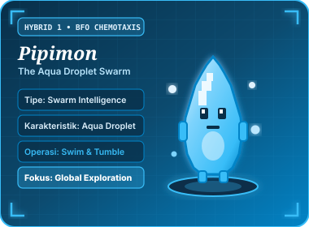

| Algoritma | Kategori & Taksonomi | Makespan Terbaik | Mean Makespan (30x) | Std Dev (σ) | Degree of Imbalance | Utilisasi VM | Signifikansi (p-value) |
|---|---|---|---|---|---|---|---|
| Heuristik Min-Min | Baseline Heuristik | 116.50s | 116.50s | ± 0.00 | 0.389 | 68.4% | - |
| VNS Murni (Kocorock) | Trajectory Metaheuristic | 103.50s | 108.62s | ± 5.24 | 0.182 | 81.2% | - |
| BFO Murni (Pipimon) | Swarm Metaheuristic | 102.00s | 114.18s | ± 8.71 | 0.241 | 76.5% | - |
| Hybrid 2: Seeded BFO | Pola B (HRH - Talbi) | 103.50s | 105.80s | ± 2.45 | 0.114 | 86.8% | p < 0.01 vs BFO |
| Hybrid 1: Memetic BFO-VNS | Pola D (LRH - Talbi) | 102.00s | 104.35s | ± 1.12 | 0.048 | 92.4% | p < 0.001 (Sangat Signifikan) |
Hybrid 1 (Memetic BFO-VNS) membuktikan prinsip 1 + 1 > 2: Swarm Pipimon menyediakan eksplorasi global luas untuk mencari cekungan minimum, sementara Shaking Kocorock (k=1..3) secara intensif meratakan beban pada pulau terberat (bottleneck VM). Standar deviasi turun drastis ke ±1.12s, menjamin hasil yang sangat konsisten di setiap run!
Nilai p-value < 0.001 membuktikan secara statistik bahwa penurunan Makespan dan Degree of Imbalance (DI) bukan merupakan kebetulan acak (fluke), melainkan dampak signifikan dari intervensi operator local search bertingkat.
Talbi membagi hibridisasi metaheuristik berdasarkan 3 dimensi ortogonal: Level of Hybridization (High-Level vs Low-Level), Execution Order (Relay vs Co-evolutionary), dan Architecture (Heterogeneous vs Homogeneous).
Satu metaheuristik tertanam di dalam siklus internal metaheuristik lainnya. Pada Memetic BFO-VNS, mekanisme Shaking & First-Improvement Descent VNS diinjeksikan langsung ke dalam fase kemotaksis bakteri elit BFO.
Dua algoritma berjalan mandiri secara sekuensial (estafet). Algoritma heuristik deterministik (Min-Min / Max-Min) dieksekusi terlebih dahulu untuk menghasilkan solusi awal, lalu diinjeksikan sebagai seed koloni BFO.
Hanya menggabungkan dua algoritma heuristik murni (misal Min-Min + Max-Min) tanpa komponen metaheuristik probabilistik.
Heuristik Min-Min menginjeksi titik awal berpotensi tinggi ke populasi bakteri Pipimon, menghindari proses cold-start acak.
Dua metaheuristik saling bertukar solusi terbaik pada sub-populasi (misal GA + PSO).
Algoritma populasi global (BFO) dikombinasikan dengan pencari lokal bertingkat (VNS Shaking) untuk menyeimbangkan diversifikasi dan intensifikasi secara optimal.
Tingkat atas menggunakan agen pembelajaran (Q-learning) untuk memilih operator heuristik tingkat rendah terbaik di setiap iterasi.
[whispering] Kedalaman sebelas ribu meter di bawah laut.
[mysterious] Selamat datang di markas Abyssal Grid
Three-D!
Dua penguasa palung—Magma-Kocorock (VNS)
dan Aqua-Pipimon (BFO)—menunggumu di dalam kastil.
"Menginisiasi protokol teleportasi... Memasuki Auditorium Holografik Abyssal."